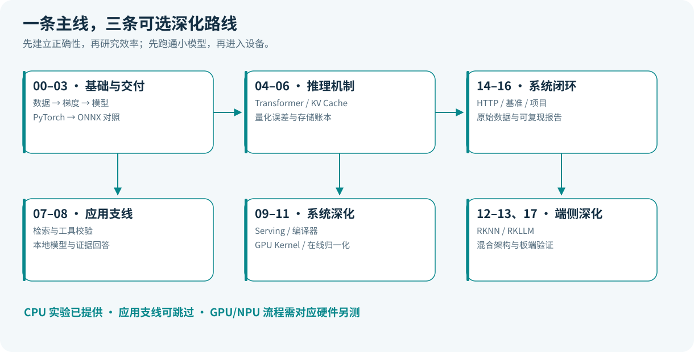
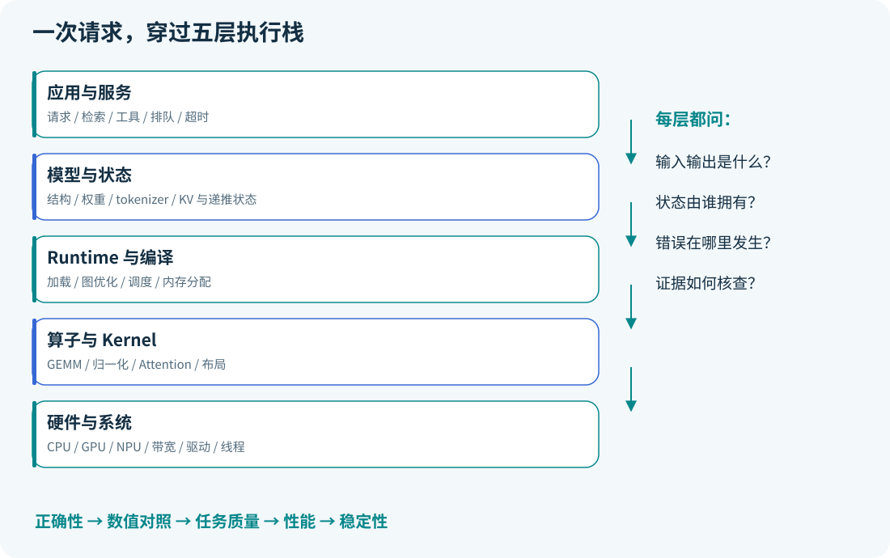
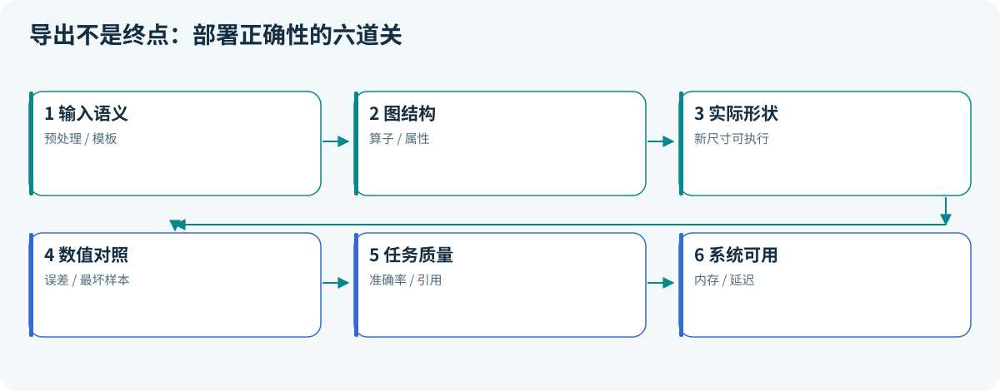
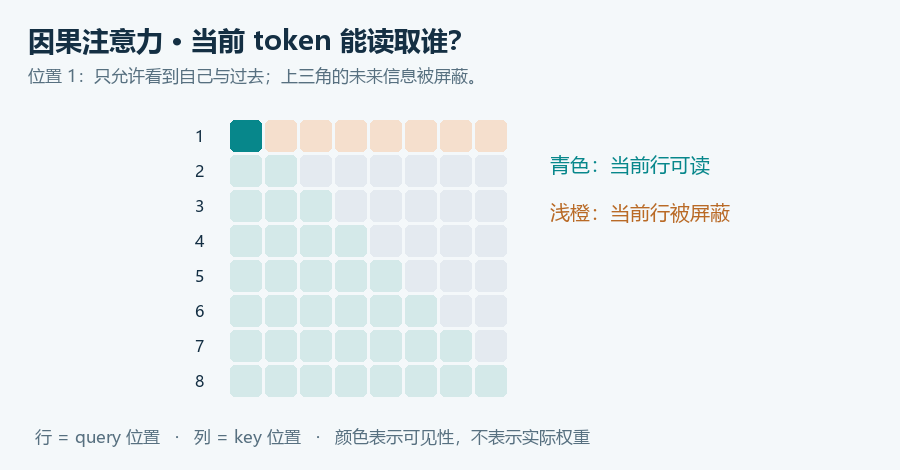
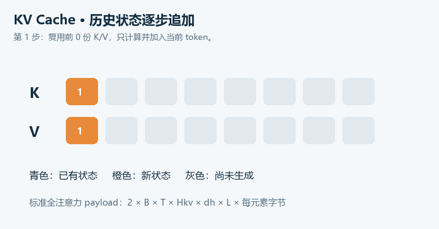
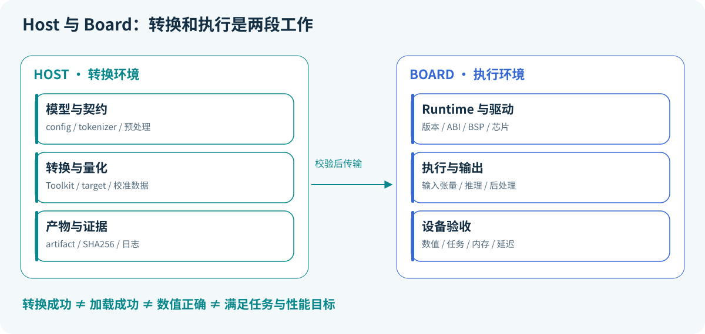

正文与公式均可离线阅读；流程图源在 GitHub 可渲染，主线另附 SVG。MathJax 许可见 vendor/mathjax/LICENSE。
从零到端侧：按能力依赖走，而不是按框架数量走
先完成一条可运行闭环，再选择应用、Serving 或硬件方向加深。路线的结束条件是你能解释并复现实验，不是读完页面。

三种起点
| 你现在的状态 |
从哪里开始 |
先不做什么 |
| Python/矩阵不熟 |
00 → 01 → 02，预留补基础时间 |
先不安装硬件 SDK |
| 会训练，缺部署 |
03 → 05 → 06 → 14 → 15 |
先不同时比较三个 Runtime |
| 已有推理经验 |
05 的数值自检，再选 09–13/17 |
先核查旧经验的版本与假设 |
12 周主线（有 Python 基础，每周约 6–8 小时）
以下时间是学习建议，不是完成保证。一次深度硬件排错可能需要额外时间；没有板卡时把硬件周用于理论和主机验证。
| 周 |
内容与问题 |
必须产出的证据 |
| 1 |
00–01：如何建立正确评估 |
基础报告、训练/验证/测试划分解释 |
| 2 |
02：梯度与训练四步 |
有限差分对照、114 参数 MLP |
| 3 |
03：导出后的语义是否保留 |
4 种 batch 数值对照和任务结果 |
| 4 |
04：attention 在算什么 |
shape 手算、因果检查、微型 LM |
| 5 |
05：缓存为何有效、占多少内存 |
logits 等价检查、KV 单位推导 |
| 6 |
06：低位宽有什么代价 |
逐通道/裁剪对照及反例解释 |
| 7 |
07–08：证据如何进入本地应用 |
检索基线；可选 GGUF 官方链路日志 |
| 8 |
09：多人请求如何调度 |
token 守恒检查；模拟假设列表 |
| 9 |
10–11：计算和搬运如何组织 |
尾块矩阵乘、在线 softmax 推导 |
| 10 |
12–13：产物与设备如何匹配 |
静态 ONNX；版本矩阵；有板卡再补实测 |
| 11 |
14–15：服务如何可靠测量 |
HTTP 测试、原始延迟、指标定义 |
| 12 |
16–17：形成独立项目与理解 |
一份完整复现报告和架构账本 |
24 周从零方案
把上表每周拆成两周：第一周学最少前置、推一遍公式并读源码；第二周运行实验、做错例、复述因果链并补报告。前六周至少掌握 Python 模块/环境、矩阵乘法、对数与导数。遇到大段工具安装不要假装在学算法，把安装记录和机制笔记分别保存。
三条可选深化路线
通用部署路线：00 → 01 → 02 → 03 → 06 → 12 → 14 → 15 → 16。先学小模型交付；LLM 可后补。
LLM 系统路线：00 → 02 → 04 → 05 → 06 → 08 → 09 → 10 → 11 → 15 → 17。重点研究计算、内存和调度。07 可选。
本地应用路线：00 → 02 → 04 → 05 → 07 → 08 → 14 → 15 → 16。检索、生成与动作分别验收，再组合。
源码和实验的依赖
流程图源代码（GitHub 中可直接渲染）
flowchart LR
A[NumPy 基础8实验] --> B[PyTorch 分类器]
B --> C[ONNX 动态/静态导出]
B --> S[HTTP 服务与CPU微基准]
A --> L[微型LM与缓存验证]
C --> N[可选RKNN转换与板端验证]
L --> R[外部LLM Runtime]
R --> H[可选RKLLM/Serving实测]
classDef done fill:#e0f3ed,stroke:#14856b,color:#13473b
class A,B,C,S,L done
基础 NumPy 实验彼此独立；export 若发现权重不存在会先训练，建议初学者仍显式跑一次 classifier 观察过程。serve、benchmark.py 和静态导出要求已有 classifier.pt。RKNN/RKLLM 不属于默认依赖。
每课都问这六个问题
输入到底是什么？什么状态会改变？公式在哪些假设下成立？同一输入的独立参考结果是什么？失败会留下什么证据？能否不用原文复述因果链？
学习进度可在 配套练习 标记；课与课的代码阅读边界见 源码课程入口。遇到不懂的符号，先从 shape、单位和一个小数值例子切入。
00 · 先搭一张能用于排错的地图
状态：已展开。目标：说清数据、模型、格式、Runtime、编译器和硬件各自负责什么。前置：会运行 Python 文件。
本课结论
“训练出了权重”只完成了一段工作。部署还必须把模型的输入约定、计算规则、参数和执行环境拼齐。先做一个小模型的完整交付，比同时安装五个推理框架更容易建立正确认知。
把模型看成菜谱会很直观：结构是做菜步骤，权重是调料配比，输入预处理是备菜，Runtime 是实际组织做菜的厨房，Kernel 是某一道具体工序，编译器负责把步骤安排得适合这个厨房。菜谱能读，不代表厨房里有所有设备；模型文件能加载，也不代表结果正确。

最少的数学与计算机基础
| 基础 |
必须会到什么程度 |
立即验证 |
| 向量与矩阵 |
判断矩阵乘法能否进行 |
[B,K] @ [K,N] -> [B,N] |
| 导数与链式法则 |
区分局部导数和整体梯度 |
推出平方损失对权重的导数 |
| 概率 |
理解条件概率与负对数似然 |
概率小的真标签为什么损失大 |
| Python |
函数、模块、异常、虚拟环境 |
从仓库根目录运行模块 |
| 内存 |
区分容量、带宽和缓存 |
1 GiB 是 \(2^{30}\) 字节 |
| Linux |
进程、文件、动态库、权限 |
找到进程日志和所加载的库 |
| Git |
提交、版本、差异 |
用一次提交绑定代码与实验配置 |
以线性层为例：\(X\in\mathbb R^{B\times K}\)，PyTorch 风格权重 \(W\in\mathbb R^{N\times K}\)，\(Y=XW^\top+b\)。参数量为 \(NK+N\)。按一次乘法和一次加法计两次浮点操作，主计算量近似 \(2BKN\) FLOPs。参数量不随 batch 增大，计算量会增大。内存容量决定能否放下；内存带宽决定每秒能搬多少数据；FLOP/s 决定每秒能做多少浮点运算。三者不能互相代替。
安装与第一次运行
要求 Python 3.10+。在仓库根目录执行；先只安装 NumPy，不需要 GPU，也不下载模型：
python -m venv .venv
.\.venv\Scripts\Activate.ps1
python -m pip install -r requirements.txt
python -m edge_ai_labs --lab all --seed 42
Linux/macOS 的激活命令为 source .venv/bin/activate，其余命令相同。若已有可用 PyTorch 环境，也可直接使用其中的 Python。输出的 artifacts/report-all.json 应包含 8 个实验的数值和环境版本。随机种子用于减少实验漂移，不保证不同硬件或不同版本逐位相同。PyTorch 可复现性说明
需要训练、导出时逐步增加依赖：
python -m pip install -r requirements-torch.txt
python -m edge_ai_labs --lab classifier
python -m edge_ai_labs --lab tiny-lm
python -m pip install -r requirements-export.txt
python -m edge_ai_labs --lab export
--lab all 指基础 8 实验；--lab full 运行全部 11 个，包含 PyTorch 与 ONNX。完整运行后执行 python -m unittest discover -s tests -v。首次安装 PyTorch 的下载时间与实验运行时间分开记录。
一次请求的主链与源码顺序
edge_ai_labs/__main__.py::main：解析 --lab、--seed 和输出目录，选择实验。edge_ai_labs/__main__.py::run：把实验名映射到函数，依赖不足会抛出导入错误。edge_ai_labs/math_labs.py 或 systems.py：产生数据并完成计算，返回可序列化指标。main：写 JSON 报告。训练模型另写本地权重；默认不会提交到 Git。
如果报 No module named edge_ai_labs，先检查当前目录是否含 edge_ai_labs/；若报 No module named onnx，检查是否用同一个解释器执行安装与运行。暂缓看 RKNN、RKLLM，它们由第 12–13 课负责。
过关任务
用自己的话串起“输入文件 → 预处理 → 张量 → 算子 → Kernel → 输出”，并举出“ONNX 文件正确但部署结果错误”的两个原因。能独立完成这一解释后，再进入机器学习。
路线总览 · 课程与源码 · 配套练习 · 下一课 01
01 · 机器学习：先证明模型学到了可迁移的规律
状态：已展开。目标：从零训练一个分类器，解释损失、数据泄漏和评估。前置：第 00 课的矩阵与概率基础。
本课结论
机器学习不是“把数据丢进模型”。你先定义预测问题，再决定哪些信息在预测时确实可用，最后用模型没见过的数据检查它。一个简单但评估可靠的模型，比高准确率但偷看答案的模型更有价值。
本项目生成 900 条四维合成样本，按 540/180/180 切成训练、验证和测试集。合成标签来自有噪声的线性规则。这里的准确率说明代码与这份数据相匹配，不代表解决了真实业务。
从线性打分到概率
令 \(z_i=w^\top x_i+b\)，用 sigmoid 得到正类概率：
\[p_i=\sigma(z_i)=\frac{1}{1+e^{-z_i}}.\]
若标签 \(y_i\in\{0,1\}\)，单样本似然是 \(p_i^{y_i}(1-p_i)^{1-y_i}\)。对所有样本的似然取负对数并求平均：
\[\mathcal L=-\frac{1}{n}\sum_i[y_i\log p_i+(1-y_i)\log(1-p_i)].\]
这就是二元交叉熵。大白话：真答案是“是”，模型却只愿意给 0.01 的概率，就要受到更大惩罚。不要先做 0/1 判决再算损失，否则梯度信息被截断。代码使用等价但数值稳定的 logaddexp(0,z)-y*z。
沿 sigmoid 和对数的导数化简，有：
\[\frac{\partial\mathcal L}{\partial w}=\frac{1}{n}X^\top(p-y),\qquad
\frac{\partial\mathcal L}{\partial b}=\frac{1}{n}\sum_i(p_i-y_i).\]
梯度下降更新 \(w\leftarrow w-\eta\nabla_w\mathcal L\)。当一个正类样本被低估时，\(p-y\lt 0\)，更新会使该样本的分数有增大的趋势。这个符号检查能帮助发现推导错误。
划分必须先于拟合预处理
标准化 \(x'=(x-\mu)/\sigma\) 中的均值和标准差只在训练集拟合，然后原样用于验证、测试和服务。如果先用全部样本计算统计量，测试集就参与了训练流程。时序数据还应按时间切分；同一人的多个片段应按人分组；随机切分不是普适规则。
流程图源代码（GitHub 中可直接渲染）
flowchart LR
A[原始样本] --> B{按部署场景划分}
B --> T[训练集]
B --> V[验证集]
B --> E[封存测试集]
T --> P[拟合预处理与参数]
P --> V
V --> S[选择模型与阈值]
S --> F[最后一次测试]
E --> F
classDef data fill:#e8f4f5,stroke:#0b7e83,color:#153e46
class A,T,V,E data
哪个指标在回答你的问题
\[\text{Precision}=\frac{TP}{TP+FP},\quad
\text{Recall}=\frac{TP}{TP+FN},\quad
F_1=\frac{2TP}{2TP+FP+FN}.\]
若故障样本只占 1%，永远预测正常也有 99% 准确率。漏报成本高时关注 recall；误报成本高时关注 precision；阈值必须在验证集选择。F1 不包含真负类，不能单独说明全部错误结构。概率需要用于决策时，还应检查校准。
不同算法怎么放在知识体系里
| 算法 |
核心直觉 |
端侧代价与适用边界 |
| 线性/逻辑回归 |
学一条打分规则 |
小、快、可解释；需合适特征 |
| KNN |
找相似的旧样本 |
训练轻，存储与检索可能重 |
| 决策树/随机森林 |
按条件逐步分流 |
表格数据常用；大森林也会占内存 |
| SVM |
寻找有间隔的分界面 |
核方法预测成本依赖支持向量数 |
| K-Means |
反复分配到最近中心再更新中心 |
聚类编号没有天然语义，不等于分类标签 |
| 强化学习 |
从状态、动作、奖励中学习决策 |
要定义环境与反馈；不是有“奖励函数”就必须用 RL |
更完整的推导可从 Dive into Deep Learning 官方教材 继续阅读；本仓库先聚焦可复现分类主链。
实验、源码与验收
python -m edge_ai_labs --lab ml --seed 42
阅读 math_labs.py::ml：生成样本 → 切分 → 拟合标准化 → 梯度更新 → 按验证损失保存参数 → 最后测试。默认种子下训练损失应下降，测试准确率约 0.97；不要把精确的小数作为跨版本断言。理解来源比背结果更重要。
思考：若把测试集换成噪声更大的数据，准确率下降是在说明实现错误，还是分布变化？若在测试集上不断调阈值，下一轮应该如何重新建立独立评估？本课到参数学习结束，神经网络反向传播由第 02 课展开。
路线总览 · 课程与源码 · 配套练习 · 上一课 00 · 下一课 02
02 · 神经网络：把“学参数”拆成能检查的四步
状态：已展开。目标：理解非线性、链式法则和训练循环。前置：第 01 课。
本课结论
深度网络仍然是在减少损失，只是把线性变换与非线性组合成更丰富的函数。反向传播负责计算导数；优化器负责利用导数更新参数。两者分工不同。
为什么多层线性仍然不够
若 \(h=W_1x+b_1\)，\(y=W_2h+b_2\)，则 \(y=(W_2W_1)x+(W_2b_1+b_2)\)，仍然是线性/仿射函数。加上 \(h=\mathrm{ReLU}(W_1x+b_1)\) 后，组合才有分段非线性表达能力。大白话：只叠加几次“按比例放大”，不会自动长出判断复杂边界的能力。
本项目 MLP 是 \(4\to16\to2\)。参数量：\((4\times16+16)+(16\times2+2)=114\)。参数很少，仍足以走完训练、模型选择、导出、服务和基准测试。
反向传播不是玄学
先考虑 \(\hat y=x^\top w\)，\(\mathcal L=\frac{1}{n}\sum_i(\hat y_i-y_i)^2\)：
\[\nabla_w\mathcal L=\frac{2}{n}X^\top(Xw-y).\]
这可以看成两步：损失告诉预测“你偏了多少”，线性层再告诉每个权重“你对这个偏差贡献多少”。多层网络只是把这样的局部导数按链式法则相乘、相加。
有限差分提供一个独立检查：
\[\frac{\partial\mathcal L}{\partial w_j}\approx
\frac{\mathcal L(w+\epsilon e_j)-\mathcal L(w-\epsilon e_j)}{2\epsilon}.\]
gradients 实验用 float64、\(\epsilon=10^{-5}\) 对照解析梯度，误差应在 \(10^{-8}\) 以下。\(\epsilon\) 太大有截断误差，太小会受浮点抵消影响；不是越小越好。自动求导本身也应借助这样的独立数值检查建立信任。
一次训练迭代的因果链
- 前向：输入和权重得到 logits。
- 损失：把 logits 与标签对照。
backward()：把梯度写到参数的 .grad。step()：优化器更新参数。
每轮前调用 zero_grad()，因为 PyTorch 默认会累积梯度。累积可以用于梯度累积训练，但忘记清零通常不是你想要的行为。
optimizer.zero_grad(set_to_none=True)
logits = model(features)
loss = criterion(logits, labels)
loss.backward()
optimizer.step()
分类器把原始 logits 交给 CrossEntropyLoss；不要先 softmax 再把概率传进去。推理时再 softmax 得到展示用概率。model.eval() 改变 Dropout、BatchNorm 等模块的行为，inference_mode() 控制自动求导开销；二者不是替代关系。
CNN、RNN 与 Transformer 怎么接上来
CNN 通过局部连接和权重共享处理局部结构。卷积输出边长：
\[H_{out}=\left\lfloor\frac{H+2p-d(k-1)-1}{s}+1\right\rfloor.\]
输入高 \(H\)、padding \(p\)、dilation \(d\)、kernel \(k\)、stride \(s\)，每项都影响输出形状。常见错误是只算了空间尺寸，忘记输出通道数。
RNN 把过去压入递推状态 \(h_t=f(h_{t-1},x_t)\)；Transformer 则通过注意力读取其他位置的信息。它们都在学习函数，但信息流与并行性不同。不能用“Transformer 没有顺序计算”概括自回归生成，生成新 token 仍然依赖上一步结果。
实验与源码阅读
python -m edge_ai_labs --lab gradients
python -m edge_ai_labs --lab classifier
先看 math_labs.py::gradients，逐个坐标比较解析梯度与有限差分；再看 torch_labs.py::classifier，输入经标准化进入 model_class，Adam 更新参数，验证损失决定保留哪份权重，测试只评价被选中的模型。
若训练损失不降，依次检查标签、维度、学习率、梯度是否存在和参数是否进入优化器。若训练降而验证升，先检查过拟合和数据分布，再考虑扩大模型。暂缓 ONNX，下一课处理模型交付。
过关任务：不用“框架帮我做了”这句话，解释 backward 后、step 前参数和梯度分别发生了什么。参考 PyTorch 官方自动求导教程。
路线总览 · 课程与源码 · 配套练习 · 上一课 01 · 下一课 03
03 · 模型交付：导出成功只是第一道门
状态：已展开。目标：把训练模型导出为 ONNX，逐层验证语义。前置：第 02 课与 PyTorch 环境。
本课结论
一个可交付模型包含结构、参数、预处理、输入输出约定和版本信息。本项目直接把标准化操作注册进导出模型，减少“训练时减均值、服务时忘记减”的风险。

先分清四种东西
| 角色 |
示例 |
负责什么 |
| 训练框架 |
PyTorch |
建模、求导、优化 |
| 表示/文件格式 |
ONNX、GGUF |
保存计算或张量及相关元数据 |
| Runtime |
ONNX Runtime、llama.cpp |
加载、调度、执行 |
| 编译器/转换工具 |
TVM、RKNN Toolkit |
改写、降低表示并适配后端 |
格式名不保证所有模型架构、算子和后端都受支持。后端执行成功，也不能证明预处理或标签顺序正确。
六道验证关卡
- 输入语义：特征顺序、图像通道、归一化、tokenizer 是否一致。
- 结构合法：图和算子属性是否满足格式要求。
- 形状可执行：实际支持哪些 batch 和序列长度。
- 数值一致：对同一输入比较中间张量或最终 logits。
- 任务一致：比较分类结果、准确率、召回率或生成质量。
- 运行可用：冷启动、内存、吞吐、异常和稳定性是否满足目标。
数值对照使用：
\[|a-b|\le \mathrm{atol}+\mathrm{rtol}|b|.\]
当 \(b\) 接近零，相对误差会夸大；所以应同时报告绝对误差。分类 argmax 相同也不代表 logits 一致：概率分布可能已经变形。反过来，接近决策边界的样本可能因极小数值误差而翻转，应查看其 margin，而不是只报一致率。
本项目如何走通
python -m pip install -r requirements-export.txt
python -m edge_ai_labs --lab classifier --seed 42
python -m edge_ai_labs --lab export --seed 42
阅读 torch_labs.py::export：读取 classifier.pt → Pipeline.forward 完成标准化与预测 → torch.onnx.export → onnx.checker → ORT CPU session → 对比四种 batch 的 logits → 用封存测试样本评价 ORT 输出。对照容差是 atol=1e-5, rtol=1e-4；它是本例 FP32 小网络的验收设置，不是所有模型的统一标准。
导出使用 dynamo=True、opset 18 和 torch.export.Dim，样例 batch 为 4，检查 batch 为 1、7、32、64。这跟只用导出样例重跑一遍不同。动态 shape 声明也不是“任意大小都能跑”的承诺，仍受图中约束、算子实现与 Runtime 影响。新版 exporter 的签名和约束以 PyTorch 官方 ONNX 文档 为准。
本实验标准化使用 register_buffer 保存均值和标准差，意味着它们随模型一起导出，却不作为可训练参数更新。模型输入始终是原始四维特征，避免导出模型和 HTTP 模型各自要求不同输入。
常见失败如何定位
| 现象 |
最先核查 |
接下来做什么 |
| 导出提示算子不支持 |
exporter、opset、该算子语义 |
缩成最小图，查询后端支持 |
| 只有 batch=4 能跑 |
动态维度是否真正进入图 |
检查 ORT 输入元信息并运行新尺寸 |
| 全部类别反了 |
标签映射、输出轴、特征顺序 |
保存少量 golden 输入输出 |
| 误差只在少数输入出现 |
极值、边界样本、精度 |
逐层比较并记录最坏样本 |
| 速度没有改善 |
线程、图大小、硬件、分配开销 |
做同口径基准，别只看格式 |
ONNX Runtime 的图优化和执行后端说明见 官方文档。第三方软件的检查器只能证明其负责的那一层，不能替你完成全部模型验收。
过关任务：解释为什么代码已经执行 check_model，还必须运行不同 batch 并比较 logits。把故意去掉标准化当作一个失败注入实验，说明会在哪一关被发现。本课到跨 Runtime 一致性结束，硬件转换在第 12 课继续。
路线总览 · 课程与源码 · 配套练习 · 上一课 02 · 下一课 04
04 · Transformer：按张量形状理解注意力
状态：已展开。目标：手算一个 attention，并训练可检查的微型语言模型。前置：第 02 课；第 03 课可后补。
本课结论
注意力是“依据当前问题，从已有信息中加权读取内容”的可微操作。它不自动理解语言；参数、数据、训练目标和结构共同决定最后学到什么。
假设你在读“把书放到桌上，因为它很平”。要理解“它”，你会回头比较候选对象。注意力中的 query 像当前要找的线索，key 像每个位置提供的索引，value 才是最后取回并混合的信息。这个比喻帮助理解数据流，但 attention 权重不能直接当作可靠的因果解释。
从输入到输出，逐项核对 shape
令 \(X\in\mathbb R^{T\times d}\)，单头投影：
\[Q=XW_Q\in\mathbb R^{T\times d_k},\quad
K=XW_K\in\mathbb R^{T\times d_k},\quad
V=XW_V\in\mathbb R^{T\times d_v}.\]
\[S=QK^\top/\sqrt{d_k},\qquad P=\mathrm{softmax}(S+M),\qquad O=PV.\]
\(S\)、\(P\) 是 \(T\times T\)，\(O\) 是 \(T\times d_v\)。softmax 沿 key 轴进行，每一行权重和为 1。不能误沿 query 轴归一化。Vaswani 等，2017，NeurIPS，原文 PDF
为什么除以 \(\sqrt{d_k}\)？若 query 与 key 各分量近似独立、均值为零、方差为 1，内积方差约为 \(d_k\)。缩放让打分的尺度不随维度直接膨胀，缓解 softmax 过度饱和。这是初始化尺度下的解释，不是训练后严格分布不变的保证。
对 \(T=3\) 的自回归输入，因果遮罩为：
\[M=\begin{bmatrix}0&-\infty&-\infty\\0&0&-\infty\\0&0&0\end{bmatrix}.\]
第 0 个位置只看自身，第 1 个位置看前两个，最后一个位置可以看全部。未来位置不是权重较小，而是被排除。修改未来 token 后，前面的输出应保持不变，这比肉眼看图更可靠。

多头、GQA 与完整 Block
多头把表示分成多个子空间。常见 shape 为 \([B,H,T,d_h]\)，各头输出拼接后经过输出投影。GQA 中 query 头数 \(H_q\) 大于 KV 头数 \(H_{kv}\)，每组 query 共享 KV。它减少 KV 存储和读取，但属于模型结构选择；不能把任意训练好的 MHA 权重随意删成 GQA 而假定语义不变。Ainslie 等，2023，EMNLP，GQA
本项目采用一个 pre-norm block：
\[U=X+\mathrm{Attention}(\mathrm{LN}(X)),\qquad
Y=U+\mathrm{FFN}(\mathrm{LN}(U)).\]
残差让信息和梯度有较直接的通路；归一化控制特征尺度；FFN 在每个位置上做非线性变换。现代 LLM 可能采用 RMSNorm、SwiGLU、RoPE、门控等变体。入门时先掌握数据流，再对照具体 config，别把一种实现当作全部 Transformer。
语言模型到底训练什么
自回归分解为 \(p(x_{1:T})=\prod_t p(x_t\mid x_{\lt t})\)，训练损失通常是各预测位置的交叉熵。已知整段文本时，可用遮罩同时计算多个位置的训练损失；生成时下一 token 未知，要逐步采样。训练的并行不等于生成没有依赖。
Tokenizer 把文本变成 token ID，embedding 把 ID 变成可训练向量。词表、特殊 token 和 chat template 都属于模型契约。字符数、词数、token 数不能互换。本项目微型模型使用字符词表，避免把 tokenizer 库安装变成学习障碍。
实验、调用链与边界
python -m edge_ai_labs --lab attention
python -m edge_ai_labs --lab tiny-lm --seed 42
math_labs.py::attention：产生 \(Q,K,V\)，比较完整因果 attention 与逐 token 读取历史 KV。torch_labs.py::tiny_lm：生成原创玩具语料和字符词表。TinyLM.forward：token/position embedding → LN → QKV → mask/softmax → residual → FFN → logits。- 训练 100 步，再比较整段前向与“11 token prefill + 逐 token decode”。
- 改写未来输入，验证前 20 个位置的 logits 不变。
模型只有约 1.6 万参数；默认训练损失下降，但生成文本仍会重复或拼错。语料重复、没有独立测试集，因此不能报告通用语言能力。这里验证的是训练链路、shape、cache 和因果约束。不要把训练损失当作下游质量结论。
过关任务：取 \(B=2,H=4,T=8,d_h=8\)，写出 Q、scores、输出以及缓存的 shape；解释为什么多个头并不等于四个独立大模型。下一课只研究已经存在的模型如何生成，不再展开预训练工程。
路线总览 · 课程与源码 · 配套练习 · 上一课 03 · 下一课 05
05 · LLM 推理：用时间线和内存账理解快慢
状态：已展开。目标：区分 prefill、decode、KV Cache 和完整服务延迟。前置：第 04 课。
本课结论
Prefill 处理已有输入，decode 利用已有状态继续生成。KV Cache 用更多内存换取减少重复计算；它没有消除新 token 对历史信息的读取。优化必须先知道时间花在哪里。
从请求到最后一个 token
流程图源代码（GitHub 中可直接渲染）
sequenceDiagram
participant U as 请求方
participant S as 服务调度
participant M as 模型 Runtime
U->>S: 请求与输入
S->>S: 模板、分词、排队
S->>M: Prefill 输入 token
M-->>S: KV 状态与首 token logits
S-->>U: 首 token（TTFT）
loop 后续生成
S->>M: 新 token 与已有 KV
M-->>S: 新 logits 与更新状态
S-->>U: 输出 token
end
给定 100 个输入 token，prefill 可以一次处理这些已知位置；第 101 个 token 被选出后，才能据此生成第 102 个。模型前向输出的是词表 logits，解码策略再选择 token。温度调整分布，top-k/top-p 约束候选；这些方法不等于提高事实准确率。
KV Cache 为什么正确
在严格因果、推理状态固定的模型中，未来 token 不改变历史位置的隐状态，所以历史层的 K/V 可以保留。对当前位置 \(t\)：
\[o_t=\mathrm{softmax}\left(\frac{q_tK_{1:t}^\top}{\sqrt{d_h}}\right)V_{1:t}.\]
只算 \(q_t,k_t,v_t\)，把 \(k_t,v_t\) 追加到缓存，再读取历史 KV。位置编码必须使用全局位置 \(t\)；如果每次 decode 都把 position 重置为 0，shape 虽正确，结果却错误。本项目 TinyLM.forward 从缓存长度得到 offset，并用全局 query/key 位置构造 mask。
大白话：已经整理好的旧资料不用重新抄一遍，但回答新问题时仍得翻阅相关旧资料。缓存不是让旧资料从内存读取里消失。
从缓存 shape 推导内存
标准全注意力各层 KV：\([B,H_{kv},T,d_h]\)，K 和 V 各一份，每元素 \(s\) 字节：
\[M_{KV}=2BTH_{kv}d_hLs.\]
更一般地应逐层求和：
\[M_{KV}=2Bs\sum_{\ell\in\mathcal A}T_\ell H_{kv,\ell}d_{h,\ell}.\]
\(\mathcal A\) 是实际缓存历史 K/V 的层。滑动窗口可能让 \(T_\ell\) 不同；混合注意力层的递推状态应单列；量化 cache 还要加入 scale 等元数据。不能把所有模型统一套进同一个全层公式。
教学配置 \(B=1,T=2048,L=24,H_{kv}=4,d_h=64,s=2\)：
\[M=50{,}331{,}648\text{ bytes}=48\text{ MiB}.\]
若仅有 6 层全注意力，这部分是 12 MiB，但还没算其他层状态。本例是合成配置，不是 Qwen3.5-2B 的配置；真实混合模型见第 17 课。

为什么 prefill 与 decode 的瓶颈常不同
线性层 \([B T,K]@[K,N]\) 在 prefill 有更多行可复用同一权重；单序列 decode 常接近一行乘大矩阵。粗略 Roofline：
\[P\le\min(P_{peak},BW\cdot I),\quad I=F/Q.\]
\(F\) 是 FLOPs，\(Q\) 是相应存储层级的数据流量。低 batch decode 常受带宽约束，但不能一概而论：batch、上下文长度、量化内核、缓存命中和硬件都会改变主瓶颈。Williams、Waterman、Patterson，2009，CACM；作者技术报告 PDF
\[M_{peak}\approx M_{weights}+M_{KV/state}+M_{workspace}+M_{runtime}+M_{I/O}.\]
权重文件只有这些项中的一部分。mmap 文件大小、虚拟地址空间、RSS、NPU 共享缓冲也有不同口径，不能直接相加而不查是否重复记账。
指标定义先固定
TTFT 从请求提交到首个输出 token；相邻输出 token 间隔为 ITL；单请求 \(N\gt 1\) 个输出 token 的平均 TPOT 可定义为 \((t_N-t_1)/(N-1)\)。端到端延迟是请求到最后输出。服务吞吐是测量窗口内完成的输出 token 数除以时间。预填充速度、单请求生成速度和全服务吞吐分别报告。
实验与过关任务
运行 python -m edge_ai_labs --lab memory，阅读 math_labs.py::kv_bytes 的逐层求和；运行 --lab tiny-lm 检查真实缓存对照。memory 返回理论 payload，不尝试冒充 RSS 测量。
请预测：上下文翻倍、batch 翻倍、KV 头减半分别如何改变该公式？再解释为什么实际峰值内存不一定精确按这个比例变化。全注意力缓存思想可延伸阅读 Shazeer，2019，Fast Transformer Decoding。
路线总览 · 课程与源码 · 配套练习 · 上一课 04 · 下一课 06
06 · 量化：把“少几位”拆成误差、存储和执行
状态：已展开。目标：推导量化公式，解释校准、异常值与量化不加速。前置：第 03、05 课。
本课结论
量化同时涉及数值近似、数据编码和硬件执行。把权重写成低位宽不自动得到快速 Kernel；权重小不等于运行内存按同样比例减小；均方误差小也不等于任务质量一定更好。
一把刻度尺的推导
仿射量化用整数 \(q\) 表示浮点数 \(x\)：
\[q=\mathrm{clip}\left(\mathrm{round}(x/s)+z,q_{min},q_{max}\right),\qquad
\hat x=s(q-z).\]
\(s\gt 0\) 是刻度间距，\(z\) 是零点。非对称量化常取 \(s=(x_{max}-x_{min})/(q_{max}-q_{min})\)，再把零点舍入并裁剪到整数范围。这样部署中的零填充值才有准确对应。Jacob 等，2018，CVPR，PDF
本项目用简化的对称量化：\(z=0\)，\(q\in[-Q,Q]\)，\(Q=2^{b-1}-1\)，\(s=\max|x|/Q\)。INT8 用 \([-127,127]\)；INT4 用 \([-7,7]\)，有意不使用最负的编码。没有裁剪时，舍入误差通常满足 \(|x-\hat x|\le s/2\)。超出校准范围后，误差可以远大于这个界。
大白话：量化像用格子纸记坐标。格子越大，细节越容易丢；范围铺得越宽，同样数量的格子就越粗。
一个异常值为什么影响整层
数组 [-0.2,0.1,0.2,30] 若共享一个 INT4 scale，则 \(s=30/7\approx4.29\)，前三个数几乎全舍入成 0。逐通道 scale 让数值范围不同的输出通道各用自己的尺子；分组 scale 在精度和元数据成本之间折中。
python -m edge_ai_labs --lab quantization --seed 42
math_labs.py::quantization 生成各行尺度不同的 \(W\in\mathbb R^{32\times64}\)，加入异常值，再对比 INT8 全张量、INT8 逐通道、INT4 逐通道和 INT4 裁剪。输出同时包含：
\[\mathrm{MSE}_W=\frac{\|W-\hat W\|_F^2}{|W|},\qquad
\mathrm{MSE}_Y=\frac{\|XW^\top-X\hat W^\top\|_F^2}{|Y|}.\]
默认样例中裁剪会伤害那个真实参与计算的异常值，输出误差反而增大。这是有意保留的反例：不能把“去异常值”写成永远有益的口诀。输入分布影响输出误差，权重 MSE 不是最终质量指标。
校准和量化方法在做什么
| 路线 |
哪些东西被估计/改变 |
主要代价 |
| PTQ |
用已有模型估计范围或优化舍入 |
校准代表性与精度损失 |
| 动态量化 |
运行时计算部分激活量化参数 |
额外在线计算 |
| QAT |
训练中模拟量化误差并适应它 |
再训练成本与工具支持 |
| 权重量化 |
压缩权重，激活可能仍浮点 |
需要高效低位宽执行或融合反量化 |
AWQ、GPTQ 等不是“同一条 round 公式换个名字”；它们针对误差与敏感性的处理不同。本实验没有实现 AWQ 或 GPTQ。继续阅读 Lin 等，2024，MLSys，AWQ 及 ONNX Runtime 官方量化文档。
为什么量化后可能更慢
若每次先把全模型解包、反量化成 FP32 再调用普通矩阵乘法，可能增加临时存储和搬运。高效实现通常在合适的计算块里解码、重标定与累积，而不是要求“永远不能反量化”。当模型很小、batch 改变、内核不支持或 CPU/NPU 数据往返占主导时，量化收益会被开销抵消。
W4A16 只描述权重与激活的主要位宽组合，不规定全部张量、scale、缓存与累加精度。对 \(P\) 个参数，\(Pb/8\) 只是裸数据理想字节数；还要考虑分组参数、padding、保留高精度层与封装。
阅读链与验证边界
quantize_dequantize：选范围 → 算 scale → round/clip → int8 存储 → 重建浮点。为了可读性，4 bit 数值也装在 int8 数组中，因此 ideal_weight_bytes 是理论 payload，不是实际压缩文件，也不是速度实测。
过关任务：解释为什么一行数范围很小，另一行范围很大时逐通道通常有帮助；再构造“权重误差更小但特定输入输出误差更大”的案例。板端量化比较必须使用相同模型、输入集和测量口径，第 15 课给出报告方法。
路线总览 · 课程与源码 · 配套练习 · 上一课 05 · 下一课 07
07 · RAG 与 Agent：知识从哪里来，动作由谁执行
状态：已展开。目标：区分检索、生成、决策和工具执行。前置：第 04 课概念；本课代码只需 NumPy。
本课结论
RAG 把外部证据放进生成过程；Agent 把模型的建议接到可执行动作。两者都需要独立评估。一个能返回文档的检索器不等于完整 RAG，一个规则路由器也不能冒称会自主规划的 Agent。
RAG 的两条链
离线链：文档 → 清洗 → 切块 → 表示 → 索引。在线链：问题 → 检索 → 可选重排 → 证据上下文 → 生成 → 引用核对。大白话：先给书做索引，再让回答者带着找到的页码回答；找到了错误页码，回答者再聪明也容易答错。Lewis 等，2020，NeurIPS，PDF
分块太小可能丢失条件，太大可能把噪声与有效句子一起送入上下文。重叠能缓解边界截断，也会造成重复证据。文档更新时需要更新索引并保留版本，否则“检索到了”仍可能是过时知识。
本实验用中英文词项和中文双字片段构建简单 TF-IDF：
\[\mathrm{idf}(t)=\log\frac{1+N}{1+df(t)}+1,\quad
v_{d,t}=tf(t,d)\mathrm{idf}(t),\quad
\mathrm{score}(q,d)=\frac{v_q^\top v_d}{\|v_q\|\|v_d\|}.\]
这是词项匹配基线，不是语义 embedding。中文分词也只做了教学简化。优点是无需网络或模型即可检查全部权重；缺点是同义改写、跨语言和长距离语义很弱。
分开评估，才能知道错在哪里
| 层 |
指标/问题 |
如何构造失败样本 |
| 检索 |
Recall@k、MRR |
用同义问法、罕见实体、无关问题 |
| 重排 |
正确证据是否前移 |
混入词相似但结论相反的文档 |
| 生成 |
回答正确、引用支持、证据忠实 |
提供含条件与例外的段落 |
| 系统 |
超时、成本、索引新鲜度 |
删除文档、更新内容、故障注入 |
本项目只有 4 道固定玩具检索题，Recall@2=1 只说明这四题命中了预设文档；题目覆盖太小，不能外推真实准确率。retrieve 对没有词项交集的问题返回空结果，便于演示拒答。正式系统需要根据独立开发集选择阈值，不能把任意大于 0 的词项相似度当作“证据充分”。
Agent 的状态机与权限边界
流程图源代码（GitHub 中可直接渲染）
flowchart LR
I[用户任务] --> P[规划或选择下一步]
P --> D{完成 / 工具 / 超限}
D -->|完成| A[返回答案与证据]
D -->|工具| V[校验名称、参数、预算]
V --> T[执行获准工具]
T --> O[记录结果为数据]
O --> P
D -->|超限| E[报告未完成原因]
ReAct 讨论推理与行动的交替组织，并不意味着应用可以不加约束地执行文本中的命令。Yao 等，2023，ICLR，PDF
工具输出、网页和检索文档都属于数据。工具名与参数需要校验；对写操作的权限、预算和超时由应用控制。MCP 规范描述连接和消息等协议机制，不能自动保证业务授权正确；使用时固定规范版本。MCP 官方规范，2025-06-18
实验、源码和升级路线
python -m edge_ai_labs --lab rag
systems.py::rag → retrieve 构建只基于文档的词表/IDF → 返回带文档 ID、文本和分数的证据 → 对四题统计命中。随后 call_tool 只允许 get_model_info，拒绝额外参数、未知模型和超出 3 次的预算。
输出包含摘录与确定性工具结果，没有调用 LLM，也没有实现多轮自主规划。要升级为完整 RAG，先接入第 08 课的本地生成端点，把文档 ID 放进 prompt，再人工核对答案与引用；要升级为 Agent，给状态机增加明确的模型选择、超时、取消和轨迹记录。
过关任务：构造一个词面几乎相同、结论相反的文档，使检索命中却不能据此直接回答；说明还需要哪层检查。暂缓真实写工具和多智能体编排，本课关注可核查的数据流。
路线总览 · 课程与源码 · 配套练习 · 上一课 06 · 下一课 08
08 · llama.cpp：第一次跑通真实本地语言模型
状态：已展开。目标：区分 GGUF、模型权重、会话状态和后端；完成本地推理与基准。前置：第 05–06 课。以下外部工具流程需读者本机执行，本交付未编译实测 llama.cpp。
本课结论
llama.cpp 的价值在于把支持的 LLM 架构、量化格式、执行后端和推理工具组织成一个本地系统。GGUF 只是其中的模型容器。能否运行取决于架构、量化类型、运行版本和后端支持的交集。官方仓库
大白话：GGUF 像装好目录和材料的箱子，llama.cpp 是能识别这些材料并按特定结构工作的工坊。箱子后缀相同，不代表里面的每套零件都能被旧版本工坊组装。
从源码构建，先固定证据
以下是 Linux/WSL2 的 CPU 路线，要求 Git、CMake 和 C/C++ 工具链。Windows 原生构建使用官方对应指南，二进制目录可能包含 Release：
git clone https://github.com/ggml-org/llama.cpp.git
cd llama.cpp
git rev-parse HEAD > source-commit.txt
cmake -S . -B build -DGGML_CUDA=OFF
cmake --build build --config Release -j 4
./build/bin/llama-cli --help > cli-help.txt
./build/bin/llama-bench --help > bench-help.txt
保存 commit 与 --help 是为了让后来者知道参数在哪个版本有效。上面不把移动的分支写成固定复现实验版本。正式复现应使用实验报告记录的 commit 重新 checkout。官方构建文档
从 Qwen 官方 Qwen2.5-0.5B-Instruct-GGUF 模型页 的文件列表选取当前工具支持的完整 GGUF 文件，放到 models/model.gguf；记录文件名、模型 revision 与 SHA256。选择它是为了先学习成熟的小模型链路，不代表最优质量或固定内存承诺。若文件分片，按模型页和 Runtime 的说明处理，不要随意拼接。
sha256sum models/model.gguf > model.sha256
./build/bin/llama-cli -m models/model.gguf -p "Explain KV cache briefly." -n 64
./build/bin/llama-bench -m models/model.gguf -p 128 -n 32 -t 4
./build/bin/llama-server -m models/model.gguf --host 127.0.0.1 --port 8080
参数以刚保存的帮助为准。先查看日志中的后端、上下文和模板；对话模型应使用匹配的 chat template。llama-bench 的 prompt processing / token generation 测量不是 HTTP 服务的完整 TTFT。
加载和执行到底分几层
阅读外部源码时，按当前 checkout 搜索行为，避免把随版本变化的行号当永久链接：
rg "llama_model_load_from_file|llama_init_from_model|llama_decode" examples tools src include
rg "gguf_init_from_file|backend_sched" src ggml
主链：工具解析参数 → 读取 GGUF 元数据和张量信息 → 建立模型对象 → 创建上下文/缓存 → 输入 token → 构图与后端执行 → logits → 采样。权重通常跨请求复用，会话 KV 和采样状态则随请求变化。某些源码符号会演进，搜索不到时从当前 public header 和工具入口反向追踪，不照搬旧教程函数名。
量化格式不只是 Q4 这两个字符
GGUF 量化可能包含分组、scale、高精度保留和混合类型。Q4_K_M 等名称不能直接解释为“所有参数精确 4 bit”。转换、量化和推理是不同步骤；转换器支持模型结构，不意味着所有量化 Kernel 在你的后端上都高效。
要做可信比较，固定模型、prompt token 数、输出数、线程、上下文、offload 配置和采样参数，再比较文件大小、运行内存、prefill、decode 与任务质量。不要把不同模型或不同量化质量的速度比写成纯 Runtime 优势。
排错与过关任务
加载失败先检查文件是否完整、架构支持和版本；输出异常先核对 tokenizer/template，再排查量化；很慢则先检查是否真的走了预期后端与线程。不要因设备带 NPU 就假定 llama.cpp 已使用它。
过关交付：一份记录 commit、模型 SHA256、完整命令、日志和原始计时的报告。没有这些证据时写“待测”。本仓库可先用 --lab tiny-lm 练习缓存机制，再用本课的大模型验证工程链路。
路线总览 · 课程与源码 · 配套练习 · 上一课 07 · 下一课 09
09 · Serving：从“能生成”到“多人同时用”
状态：已展开。目标：理解连续批处理、分页 KV、Runtime 选型与公平对比。前置：第 05 课。
本课结论
Serving 的核心是协调请求与有限资源。高吞吐、低 TTFT、低尾延迟可能互相牵制。vLLM、MLC-LLM 和 llama.cpp 的定位不同，不能仅按单一 tokens/s 排名。
连续批处理为什么有用
有两个执行槽，A 生成 2 token，B 生成 8 token。静态批处理可能等待整批 B 完成再接 C；连续批处理在 A 完成后让 C 进入，减少空槽。大白话：一桌人都吃完才换下一桌，和哪个座位空了就补人，利用率当然不同；但补人、端菜和排队本身也有成本。
systems.py::simulate 假设所有请求在 tick 0 到达，每个活跃序列每 tick 输出一个 token。它没有 prefill、带宽竞争、KV 容量、优先级或抢占，目的是让调度时间线可以逐格检查。默认长度 [2,8,2,2,6,3]：静态 16 tick，连续 12 tick；这是模型假设下的结果，不是 vLLM 实测提速。
python -m edge_ai_labs --lab serving
先读 serving 的长度与槽数，再读 simulate：补入请求 → 保存本轮成员 → 产生 token → 记录完成 → 移除完成请求。测试检查每个请求恰好产生指定数量 token，且活跃数不超过槽数。
PagedAttention 和 FlashAttention 解决不同问题
KV 长度动态增长，若为每请求预留最大连续空间，会浪费容量。分页把逻辑连续 token 映射到物理块，减少碎片并支持共享。它不改变每个 KV 元素的位宽，也不是把标准注意力算术复杂度自动变成线性。Kwon 等，2023，SOSP，PDF
FlashAttention 主要优化注意力计算的数据流；分页 KV 主要改变缓存存放与访问组织。具体实现可组合两类思想。Prefix caching 可复用相同前缀已算出的状态，直接节约的是重复 prefill；缓存还占资源，所以系统吞吐与尾延迟的最终变化要测。
Runtime 如何选择
| 路线 |
优先研究的问题 |
不能直接假定的事 |
| llama.cpp |
本地/嵌入式推理、GGUF、CPU 与多后端 |
有 NPU 就自动加速 |
| vLLM |
高并发调度、KV 管理、服务指标 |
当前环境一定支持目标设备/模型 |
| MLC-LLM |
编译驱动、多目标部署与模型库 |
所有设备都无需重新编译/配置 |
| RKLLM |
厂商支持矩阵内的 NPU LLM 部署 |
GGUF 可以直接当 .rkllm |
vLLM 与 MLC 的安装、设备和模型支持随版本变化，先读 vLLM 官方文档 和 MLC Python Engine 文档。本仓库没有把它们塞进基础依赖，也未完成其硬件实测。
vLLM 的可选启动模板如下，要求在已按官方要求安装且硬件受支持的独立环境中执行，并把 models/hf-model 替换为已下载和核验的模型目录：
python -m pip show vllm
vllm serve --help
vllm serve ./models/hf-model --host 127.0.0.1 --port 8081
先用单请求验证 template、输出与内存，再逐步提高并发。MLC 路线先确认目标架构、权重转换产物和模型库匹配，再通过 MLCEngine 运行。命令/API 以所固定版本为准，不提供一个貌似通用却缺目标配置的编译命令。
公平比较需要同一到达过程
闭环压测是“收到响应再发下一个”，适合测固定并发，但服务一变慢，客户端也少发请求；开环按设定到达率发请求，更能观察过载排队。比较时固定请求集合、到达种子、输入/输出 token 长度、超时与错误口径。
Little 定律 \(N=\lambda W\) 在稳定系统、统一边界和长期平均下关联在系统请求数、吞吐和逗留时间；不能拿瞬时值套它预测任何队列。平均吞吐提高也可能伴随 p95 TTFT 变差。
过关任务：在调度模拟中加入不同到达时刻与一个 KV token 预算，说明“空槽存在但不能接新请求”的条件。把新模型假设写到报告开头，再讨论结果。真正服务压测方案在第 15 课继续。
路线总览 · 课程与源码 · 配套练习 · 上一课 08 · 下一课 10
10 · AI 编译器：计算不变，安排可以不同
状态：已展开。目标：理解图优化、张量程序、分块和目标后端。前置：矩阵乘法与第 03、05 课。
本课结论
编译器不是简单把 Python 翻译成 C。它需要保留计算语义，改变数据流、循环组织、存储与指令映射，并遵守 shape、dtype 和目标硬件约束。优化先验证正确性，再验证速度。
同一个矩阵乘法的两种视角
图层看到 MatMul -> Bias -> ReLU，可以分析数据依赖、常量折叠、融合或布局改写。张量程序层看到：
\[C_{ij}=\sum_{k=0}^{K-1}A_{ik}B_{kj}.\]
它要决定循环顺序、tile 大小、并行映射和中间数据存在哪里。融合能减少中间写回与启动，但可能增加寄存器压力或破坏高效库调用；不是算子越少越快。
大白话：数学表达规定“最终要算出什么”，schedule 规定“工人分哪组、材料先搬哪块、哪个结果留在手边”。工序相同，材料搬运次数可以差很多。
分块为什么减少重复搬运
若分别计算一个输出元素，每个元素都需要相应的一行 A 和一列 B。一次算 \(b\times b\) 的输出块，在一个 K 分块里读入两个 \(b\times b\) 输入块，做约 \(2b^3\) 次浮点运算。忽略输出与其他开销、每元素 \(s\) 字节时，算术强度约为：
\[I\approx\frac{2b^3}{2b^2s}=\frac b s.\]
tile 越大，潜在复用越多，但缓存/共享内存/寄存器容量有限，过大会溢出或减少并发。这个估计说明方向，不直接给最优 tile。
可运行的分块实验
python -m edge_ai_labs --lab compiler
math_labs.py::compiler 构造 \(17\times11\) 与 \(11\times13\) 的矩阵，按 tile=4 计算，并对照 NumPy a @ b。尺寸特意不整除 tile，检查尾块。这里每块仍调用 NumPy 矩阵乘，Python 循环也有开销，因此不能用它证明 GPU 分块 Kernel 加速。
接着用合成上限 \(P_{peak}=1\) TFLOP/s、\(BW=20\) GB/s、\(I=2\) FLOP/byte 算 Roofline，得到 40 GFLOP/s 的带宽上限；拐点为 50 FLOP/byte。它不是任何具体芯片指标。公式和单位可独立核算。
TVM 的知识结构
TVM 原始论文讨论端到端优化与代码生成：Chen 等，2018，OSDI，PDF。当前工程学习应同时看官方文档，不能把 2018 年实现当作当前 API。
| 抽象层 |
关注的问题 |
阅读入口 |
| 图/Relax |
shape 关系、算子组合和数据流 |
Relax |
| 张量程序/TensorIR |
循环、buffer、访存和调度 |
TensorIR |
| Target/CodeGen |
指令、设备能力、外部库 |
TVM 架构 |
| Runtime |
模块加载、调用、设备资源 |
TVM 总文档 |
具体模块名随版本演进；教程不将某个 tir 导入路径写成永久事实。BYOC 接入厂商代码生成需要后端实现，不意味着任意 NPU 只改一个 target 名就能使用。
优化时必须检查哪些语义
浮点加法不满足精确结合律，改变 reduction 顺序可能改变低位；融合激活可能改变中间舍入；布局改变需要同步更新 stride；动态 shape 需要实际约束；含随机数或状态更新的操作不能任意重排。容差要结合任务与精度选择。
排错按顺序：最小输入参考输出 → 原始图 → 每一优化阶段 IR → 单算子 → 目标设备。先找首个数值偏离的位置，再谈最终输出。暂缓真实 TVM 构建与 autotuning，它们属于有对应硬件和固定编译环境后的扩展任务。
过关任务：解释把 17 改成 16 后少了哪类边界检查；说明为什么“tile=32 比 tile=16 大”不足以推出更快。
路线总览 · 课程与源码 · 配套练习 · 上一课 09 · 下一课 11
11 · GPU Kernel 与 FlashAttention：少搬中间结果
状态：已展开。目标：推出在线 softmax，理解 IO 优化与数学复杂度的区别。前置：第 04、10 课。数值实验只需 CPU；没有 GPU 性能实测。
本课结论
FlashAttention 的关键不是删掉标准注意力中的两两交互，而是用分块与在线归一化减少大中间矩阵在慢速存储层的读写。算法的数值等价和 GPU 的运行加速要分别验证。Dao 等，2022，NeurIPS，PDF
先看朴素注意力的材料流
先算 \(S=QK^\top\)，再写回；读 \(S\) 算 softmax 得到 \(P\)，再写回；读 \(P\) 和 V 求输出。序列长时，\(T\times T\) 中间矩阵可能成为重要的容量和流量开销。
大白话：如果一边读一边累计最终答案，就不必把所有中间草稿都搬到仓库再搬回来。关键难点在于 softmax 的分母依赖整行，不能天真地“每块各做 softmax 再拼接”。
在线 softmax 从合并两个分块推导
对已经处理的分数集合，保存三个量：最大值 \(m\)、归一化分母 \(\ell\)、未归一化加权和 \(a\)：
\[\ell=\sum_j e^{s_j-m},\qquad a=\sum_j e^{s_j-m}v_j.\]
新块的最大值为 \(m_b\)，记 \(m'=\max(m,m_b)\)。把旧结果换到同一指数基准，再加新块：
\[\ell'=e^{m-m'}\ell+\sum_{j\in b}e^{s_j-m'},\]
\[a'=e^{m-m'}a+\sum_{j\in b}e^{s_j-m'}v_j,\qquad o=a'/\ell'.\]
为什么能这样合并？因为 \(e^{s_j-m}=e^{s_j-m'}e^{m'-m}\)，旧项乘 \(e^{m-m'}\) 就与新项处在同一基准。初始化 \(m=-\infty,\ell=0,a=0\)。最大值移位让指数不容易上溢。
例子：分数 [1,2]，value [10,20]。先读第一项得到 \(m=1,\ell=1,a=10\)；第二项使 \(m'=2\)，更新 \(\ell'=e^{-1}+1\)，\(a'=10e^{-1}+20\)；结果约 17.31，与一次性 softmax 完全同义，浮点舍入除外。
本仓库真正实现了哪部分
math_labs.py::online_attention 对每个 query 逐 key 块更新三个量，支持因果 attention 和不能整除的尾块。它不会构造完整 \(T\times T\) scores；但它是 NumPy/Python 数学参考，不是 FlashAttention GPU Kernel 的性能复现。
python -m edge_ai_labs --lab attention
python -m unittest discover -s tests -v
测试除了普通输入，还包括大幅值 logits、block=1/4/32、尾块与“改未来不能影响过去”的检查。读完 dense_attention 后看 online_attention 的 rescale，思考如果漏乘它，哪个量会先失真。
接入 GPU 时还要理解什么
| 概念 |
影响什么 |
| grid/block/thread |
工作如何分配；同步可以发生在哪个范围 |
| 全局内存/共享内存/寄存器 |
容量、访问代价与数据复用 |
| 合并访存 |
相邻线程的数据访问是否适合硬件 |
| Tensor Core/MMA |
支持的 dtype、tile 与矩阵操作 |
| occupancy |
活跃工作数量；过高也不保证最快 |
| launch 与同步 |
小算子时可能占显著比例 |
具体执行语义见 NVIDIA 官方 CUDA Programming Guide；在受支持 GPU 上继续阅读 Triton 官方 Fused Attention 教程。不要把 NVIDIA 的线程组织细节套给所有 NPU。
三个容易混淆的复杂度
完整 attention 的两两交互算术仍通常为 \(O(T^2d)\)；避免存储完整中间矩阵能改善额外存储与 IO；单次 decode 的 query 长度是 1，其 shape 和 prefill 不同。谈“线性内存”时必须说明是哪个张量、哪个阶段和哪一项额外空间。
过关任务：反驳“FlashAttention 用近似换速度”和“FlashAttention 让所有 attention FLOPs 变成线性”这两句话，分别指出错误发生在数学语义还是复杂度口径上。硬件编译与 NPU 工程在下一课展开。
路线总览 · 课程与源码 · 配套练习 · 上一课 10 · 下一课 12
12 · RKNN 与 NPU：把兼容性当作完整链路检查
状态：已展开；硬件流程待读者实测。目标：理解 Host 转换、Board 执行和精度验证。前置：第 03、06 课；需要 SDK 支持的 Host 和 Rockchip 板卡才能执行本章硬件部分。
本课结论
NPU 部署不是给 ONNX 换一个后缀。模型算子、shape、量化参数、转换器、产物、Runtime、驱动和目标芯片需要共同兼容。先做最小模型的浮点/高精度基线，再研究量化与吞吐。
Host 与 Board 分工

Host 负责转换、量化和产生 .rknn；Board 负责以 Runtime 与驱动执行。Python wheel、ARM 动态库、内核驱动不是同一个组件；仅更新其中一个未必解决兼容问题。
官方入口：RKNN-Toolkit2、RKNN Model Zoo。模型、芯片、算子和 wheel/系统支持以所选 release 的文档为准。本章不以在线最新版本自动替换你已经验证的版本矩阵。
从本仓库的小模型开始
第 03 课导出的是动态 batch ONNX；第一轮 NPU 实验宜另做静态 batch=1，减少变量：
python -m edge_ai_labs --lab classifier
python adapters/export_static.py
export_static.py 的主机端导出已在本交付环境测试；它不证明 NPU 编译器支持全部算子或 opset。本例标准化已在图内，不要在 RKNN config 再重复同一组 mean/std。
在独立、由官方 SDK 支持的转换环境准备对应 Toolkit 后，才运行以下适配模板：
python adapters/convert_rknn.py --model artifacts/classifier-static.onnx --target rk3576 --output artifacts/classifier.rknn
模板按 config → load_onnx → build → export_rknn → release 组织，检查每一步返回码，保存输入/产物 SHA256。该模板未在本交付运行 RKNN；若 SDK 不支持此 ONNX，需要按其支持矩阵调整导出或算子，而不是忽略错误。需要量化时才增加 --dataset calibration-list.txt，格式严格遵循你固定版本的 SDK 示例。
校准数据应与原始模型输入一致，保持正确 shape、dtype、范围。图中已含标准化，校准时输入就应是原始特征，不能先标准化两次。完成转换仍需使用官方 Runtime 示例做板端推理，保存 raw outputs 与同一输入的 PyTorch/ORT 输出对照。
NCHW、NHWC 与预处理
图像链路要逐项固定：相机/文件输入 → 色彩空间 → 裁剪/letterbox → resize → 归一化 → layout → dtype → 推理 → 后处理。NCHW 是 \([B,C,H,W]\)，NHWC 是 \([B,H,W,C]\)；交换 shape 不能代替正确地转置数据。
假如训练用 RGB，而摄像头给 BGR，模型往往还能输出“像真的”类别，但整体质量变差。把一张有红、绿、蓝三色块的测试图跑过完整预处理，直接检查输入张量，比盲目调阈值有效。
所谓零拷贝也要说明哪段链路共享缓冲、谁拥有内存、同步在哪里完成。减少一次 memcpy 不等于整个端到端链路没有任何转换或缓存操作。
三层精度与性能检查
| 层次 |
必须保存的证据 |
| 原始模型 vs 转换工具结果 |
同一 golden 输入、输出 shape、误差 |
| 转换工具 vs Board Runtime |
同一产物、输入、输出、版本与日志 |
| 真实输入到业务输出 |
预处理、后处理、任务指标和失败样例 |
先确认正确性，再测单模型推理，最后加入采集、拷贝、排队和可视化。宣传中的峰值 TOPS 对应特定位宽与条件，不能直接换算成某个模型 FPS。
排错顺序和过关任务
Host 导入失败先查 wheel/Python/架构；编译失败查算子/opset/shape；加载失败查产物与 Runtime/驱动/芯片；输出错误查预处理/布局/量化；慢则查数据路径、CPU fallback 和真实设备利用。保存最小失败样本，避免只贴一行报错。
过关标准是用同一输入证明 PyTorch、ORT 与 Board 输出之间的关系，并提交版本矩阵。未持有板卡时，完成主机端导出和验证即可，硬件状态写“待验证”，不能填模拟出的板端延迟。
路线总览 · 课程与源码 · 配套练习 · 上一课 11 · 下一课 13
13 · RKLLM：语言模型的产物、状态与生命周期
状态：已展开；硬件部分待实测。目标：设计可复现的厂商 LLM 部署流程。前置：第 05–06、12 课。
本课结论
RKLLM 的学习重点是支持矩阵、产物转换、Runtime 状态和资源生命周期。厂商算法缩写不能凭名字还原成论文算法；没有官方证据，就只描述可观察的接口与结果。
和 RKNN、GGUF 的关系
.rknn 与 .rkllm 不是同一种部署产物，GGUF 也不能直接改后缀转换。SDK 的模型结构支持、量化方式、目标平台和运行库之间需要匹配。Rockchip 官方 rknn-llm 仓库
选模先查官方支持矩阵，再查具体模型 revision/config。本教程以 Qwen3.5-2B 作为进阶配置解剖案例；实际部署从当前 SDK 明确支持、能验证正确性的小模型开始，并单独记录测量结果。
转换前先写清交付契约
| 项目 |
要记录的内容 |
| 模型 |
ID、revision、config、tokenizer/template hash |
| Host |
OS、CPU 架构、Python、Toolkit 版本 |
| 转换 |
target、量化类型、算法配置、校准数据 hash |
| 产物 |
路径、大小、SHA256、转换日志 |
| Board |
SoC、RAM、BSP/kernel、driver、Runtime |
| 任务 |
prompt、上下文上限、输出上限、采样和停词 |
不要把 .rkllm 大小当作运行内存，也不要把 W4A16 理解成所有缓存与累加都用 4/16 bit。GRQ 等选项应按固定 SDK 版本的官方说明理解；本教程不猜测其内部 group size、损失函数或层敏感性策略。
一次推理的资源主链
流程图源代码（GitHub 中可直接渲染）
stateDiagram-v2
[*] --> Unloaded
Unloaded --> Ready: 初始化成功
Unloaded --> Failed: 初始化失败
Ready --> Running: 接受请求
Running --> Running: 收到增量片段
Running --> Ready: 正常结束 / 确认取消完成
Running --> Failed: 不可恢复错误
Ready --> Unloaded: 释放
Failed --> Unloaded: 清理已创建资源
这是一种建议的应用层状态机，不是对某个 SDK 内部状态的断言。具体 C API、同步/异步、取消方式与回调枚举必须查看该 release 的头文件与例子。不能假定销毁函数可在任意回调线程安全调用。
大白话：权重像图书馆的藏书，会话缓存像某位读者的借阅桌。多次访问可以共享藏书，但不能随意混用不同读者的桌面笔记。资源归属不清，会话串扰、释放时机和内存增长就很难排查。
建议的运行封装
初始化完成后再接受请求；每个请求拥有 ID、时间戳、取消标记和输出缓冲。回调只做轻量数据转交，UI/网络线程负责展示。根据 SDK 实际线程安全契约选择单 worker 或多实例，不因 HTTP 服务支持多线程就同时操作同一模型句柄。
结束、失败、超时、客户端断开是不同事件。客户端断开并不自动终止底层生成；取消发出也不等于资源已经空闲。状态转换应在确认运行结束后完成。需要限制输入长度、输出长度和会话数量，避免内存预算只有平均值没有峰值。
分三阶段落地，避免同时排十个错误
- 官方基线：使用固定 release 自带、明确支持目标芯片的模型/例子，保存日志。
- 自有产物：只替换模型转换结果，维持其它条件，检查模板、EOS、输出与内存。
- 服务集成：再加入会话、流式输出、超时、取消和 UI，每次只增加一种复杂性。
本交付不附一个凭猜测拼出的通用 RKLLM Python/C API 实现。官方导出参数与回调签名变化快，应把固定 release 的官方示例作为可执行起点，再按上面的应用契约包裹。模板和记录表位于 templates/。
混合注意力与多模态的额外约束
标准 KV 公式只能用于真实全注意力层。线性注意力的递推状态、短卷积缓存、精度与分配策略另算，见第 17 课。图像问答还需要匹配的视觉 encoder、projector、特殊 token 与图像预处理。把任意图像 embedding 送进任意语言模型并不是通用多模态接口。
过关任务：画出“初始化失败”“正常结束”“用户取消”三条路径，标出每份资源何时获得、何时确认释放。没有板卡时提交状态设计与版本计划；不要标成已完成运行验证。
路线总览 · 课程与源码 · 配套练习 · 上一课 12 · 下一课 14
14 · Linux 与系统集成：把模型变成可观测服务
状态：已展开。目标：完成本地 HTTP 模型服务，并规划板端采集/推理集成。前置：第 02–03 课。
本课结论
真实应用不仅调用一次 forward，还需要管理输入、请求、线程、内存、日志和关闭流程。本课提供可运行的 CPU HTTP 服务；板端多模态部分是可逐阶段验收的扩展设计。
先运行一个小而完整的服务
python -m edge_ai_labs --lab classifier
python -m edge_ai_labs.serve --artifacts artifacts --port 8000
另开终端发送请求：
Invoke-RestMethod http://127.0.0.1:8000/health
$body = @{features=@(@(1.0,2.0,3.0,4.0))} | ConvertTo-Json -Depth 4 -Compress
Invoke-RestMethod -Method Post -Uri http://127.0.0.1:8000/predict -ContentType 'application/json' -Body $body
Linux/macOS 可用：
curl http://127.0.0.1:8000/health
curl -X POST http://127.0.0.1:8000/predict -H 'Content-Type: application/json' -d '{"features":[[1,2,3,4]]}'
本例使用 Python 标准库 HTTP server，绑定 loopback，适合教学和本地联调；没有生产服务的认证、TLS、进程管理与压测承诺。它不是 LLM completion API，也不冒充流式生成服务。
沿真实调用链阅读
serve.py::build_server 读取权重、均值和标准差，并计算模型 SHA256。Handler.do_GET 的 /health 返回 ready 和模型标识；未知路径返回 404。Handler.do_POST 校验请求路径、body 长度和字段集合。- 检查输入必须是有限数值的
[B,4]，\(1\le B\le64\)。
- 标准化 → MLP → softmax → JSON 概率和预测；输入错误返回 400。
测试实际启动临时端口，检查健康、正常预测和错误 shape；它不是只调用内部函数的假集成。服务使用只读推理模型，尚未实现排队容量、生产超时治理和滚动发布。
系统基础如何围绕问题学习
| 实际问题 |
学习内容 |
可观察证据 |
| 动态库找不到 |
ELF、动态链接、搜索路径 |
ldd、实际运行日志 |
| 越跑越慢 |
线程、锁、队列、温度 |
CPU 负载、队列长度、温度/频率 |
| 内存持续增长 |
所有权、缓存、缓冲、泄漏 |
RSS/PSS、设备缓冲、请求后曲线 |
| 相机输出不对 |
V4L2、像素格式、stride |
原始帧与处理后图像 |
| 程序无法停止 |
信号、阻塞 IO、取消与回收 |
shutdown 日志与资源释放 |
在 Linux 上先保存只读状态：
uname -a
cat /etc/os-release
free -h
ps -eo pid,comm,rss,nlwp
更深诊断用实际 pid 检查 /proc/<pid>/smaps_rollup、打开文件与线程。不要把 VmSize 当成物理占用，也不要不区分共享内存就累加多个进程 RSS。
多模态扩展：先明确数据流和背压
摄像头采集 → 有界帧队列 → 视觉预处理 → encoder/RKNN → 结果/embedding → 语言侧解释 → 客户端。显示与推理可以使用不同支路。交互场景下可采用“保留最新帧、丢弃过期帧”，而离线录像分析可能要求逐帧处理；策略取决于任务，不能一概丢帧。
记录 capture、enqueue、inference start/end、response 时间，才能区分模型慢还是积压。若输入平均速率超过处理能力，单纯增加队列只会扩大延迟，必须减少输入速率、扩容或明确丢弃/降级策略。
用 C++/Qt 扩展时，将模型资源放入 RAII 对象；工作线程和 UI 线程通过明确消息交接；回调指向的缓冲不能在 UI 使用前释放。先实现静态输入与单次结果，再加实时采集、流式文本和取消。具体 SDK 的线程安全必须按官方契约验证。
过关任务：从原始 HTTP body 复述到最终概率的每一步，说明错误字段为什么返回 400；再设计一个相机 30 FPS、推理 5 FPS 的有界队列策略，并指出你牺牲的是完整性还是时效性。
路线总览 · 课程与源码 · 配套练习 · 上一课 13 · 下一课 15
15 · 基准与排错：用证据决定优化方向
状态：已展开。目标：建立数值、任务、性能和稳定性分层报告。前置：第 03、05、14 课。
本课结论
一次优化只有在相同任务、质量约束和测量边界下比较，才有意义。先记录原始数据，再写结论。工具跑完没有报错，只是最低要求。
第一步：定义你究竟测哪一段
\[T_{e2e}=T_{queue}+T_{preprocess}+T_{transfer}+T_{compute}+T_{postprocess}+T_{transport}.\]
这是划分思路，各项若实际重叠，不能把独立计时直接相加当墙钟时间。需要区分端到端耗时、设备事件耗时与各阶段重叠。异步设备若只计提交 API 的时间，会把主要计算漏掉；应使用该设备支持的同步/事件方法。
本仓库 scripts/benchmark.py 只测 CPU 进程内“预处理 + forward”，输入张量已分配；不包含请求队列、HTTP 和序列化。它设置单线程、30 次预热、300 次采样，保留原始毫秒数组，分别测试 batch=1/8/32/64。
python -m edge_ai_labs --lab classifier
python scripts/benchmark.py --repeats 300
输出是很小 MLP 的微基准，不应拿其高 samples/s 推断真实网络服务容量。计时开销、操作系统调度和后台进程在微秒级结果中占比可能很高。跨设备比较先扩大足够代表实际任务的工作负载。
第二步：选择统计口径
均值反映总时间摊到请求的平均，p50 反映典型请求，p95/p99 反映尾部。300 样本可以初步看分布，不能为高精度尾延迟保证提供充分证据。长任务要重复独立运行，明确实验单位；同一次运行里的许多 token 不是许多独立实验。
吞吐用“完成工作量 / 墙钟窗口”计算。batch latency、每样本平均摊销时间和单样本独立请求时延不同：一次 batch=64 用时 1 ms，不代表单个独立请求只要 \(1/64\) ms。
冷启动包括首次加载、编译、页缺失和缓存建立等；稳态测试另做。温度/频率、功耗模式和是否启用 swap 需要记录，尤其是小板卡。不要把最冷的一次结果与另一配置的热稳态结果对比。
第三步：给 LLM 固定工作负载矩阵
| 因素 |
建议起点 |
必须说明的边界 |
| prompt 长度 |
128、512、2048 token |
以实际 tokenizer 计数 |
| 输出长度 |
固定上限并记录实际输出数 |
EOS 提前停止会影响工作量 |
| 并发 |
1、2、4，逐级增加 |
队列与内存是否过载 |
| 精度 |
高精度基线、一个量化候选 |
任务质量先过门槛 |
| 重复 |
独立多次运行 |
缓存、模板、随机种子一致 |
| 内存 |
初始化、prefill 峰值、decode、结束后 |
RSS/PSS/设备内存口径 |
分别报告 TTFT、ITL/TPOT、端到端延迟、完成吞吐、超时率和错误率。prefix cache、prompt cache、权重 page cache 要明确命中条件，不能把缓存命中与不命中混成同一配置。
第四步：用 Amdahl 定律判断值不值得做
若目标部分占原始时间比例 \(f\)，该部分加速 \(s\) 倍，总加速比为：
\[S=\frac1{(1-f)+f/s}.\]
假如模型计算只占总延迟 40%，即便无限加速，整体上限也只有 \(1/0.6\approx1.67\) 倍。大白话：一小时的流程里只有 24 分钟在算模型，把这段全省掉仍要花 36 分钟。先测时间占比，能避免在不重要的 Kernel 上耗费大量时间。
排错树
流程图源代码（GitHub 中可直接渲染）
flowchart TD
A[结果不满足目标] --> B{数值/任务正确吗}
B -->|否| C[固定输入: 预处理→图→算子→后处理]
B -->|是| D{时间主要在哪}
D --> Q[排队: 到达率/容量/背压]
D --> M[计算: shape/kernel/精度]
D --> IO[搬运: layout/拷贝/缓存]
D --> S[系统: 线程/频率/温度/交换]
建议实验记录和版本矩阵见 templates/。过关任务：给“量化后慢了 10%”写一个排查计划，先列三个能区分原因的测量，再提出优化；不要从结论倒推一个没有日志支持的解释。
路线总览 · 课程与源码 · 配套练习 · 上一课 14 · 下一课 16
16 · 综合项目：把学习路线变成可复现作品
状态：已展开。目标：按里程碑完成通用 AI 部署项目。前置：按所选路线完成前面章节。
本课结论
最终作品应当让别人拿到仓库就能完成一次独立验证。功能数量不是主要标准；每个功能是否有输入、输出、版本、实验和失败说明，才决定教程能否被跟学。
项目 A：CPU 模型交付闭环（本仓库已实现）
目标是从合成原始特征训练分类器，导出包含预处理的 ONNX，并提供本地 HTTP 与可重复基准。它不是大模型服务，但能把训练和部署最容易出错的边界全部走一遍。
python -m pip install -r requirements-export.txt
python -m edge_ai_labs --lab full --seed 42
python adapters/export_static.py
python -m unittest discover -s tests -v
python scripts/benchmark.py
python scripts/check_docs.py
主链：__main__.main → torch_labs.classifier → model_class → 训练/验证选模 → checkpoint；随后 export → Pipeline → ONNX → ORT → logits/任务对照；最后 serve.build_server → Handler.do_POST → 标准化 → MLP → JSON。
验收需保留 report-full.json、训练曲线、基准原始数组、服务测试结果。输出样本应带模型 hash，便于追溯是哪一份权重。权重在本地生成，不必上传到 GitHub；若发布模型，另核查适用的分发和模型许可。
可做的实质扩展：替换成公开、许可清楚的真实数据；按数据来源而非随机行切分；加入新的分布漂移测试；比较 MLP 与逻辑回归；报告质量和延迟的 Pareto 关系。不要只把合成数据的高准确率包装成部署效果。
项目 B：本地语言模型知识助手（扩展任务）
| 阶段 |
动作 |
结束条件 |
| B0 |
第 08 课运行 GGUF 小模型 |
commit、模型 hash、单请求日志 |
| B1 |
自建小文档集并建立检索 |
人工标注相关文档与无答案问题 |
| B2 |
将证据送入本地模型 |
回答带文档 ID，逐项检查支持关系 |
| B3 |
接入只读元数据工具 |
未知工具/参数拒绝，调用预算可见 |
| B4 |
比较不同上下文与并发 |
质量不低于阈值，报告 TTFT/TPOT/内存 |
| B5 |
接入持久化与取消 |
跨会话隔离、断线后资源正确回收 |
systems.py::rag 提供的是 B1 和工具校验的教学基线，不能直接声称 B2–B5 都已经实现。真实完整 RAG/Agent 服务需要读者接入生成 Runtime 并提交对应证据。
项目 C：Rockchip 端侧推理（硬件任务）
先选一个官方支持、能跑通的静态小模型；对比 PyTorch/ORT/RKNN 输出；再做量化和逐项测量。LLM 路线单独选 RKLLM 支持的模型和 release，保留原生 demo 基线，再加服务封装。只有视觉链路和文本链路各自通过，才进入多模态。
内存不足时先拆账本：权重、KV/递推状态、workspace、图像缓冲、服务与 UI。减少上下文、限制并发、缩小模型、分阶段加载各有代价。不要先靠 swap 把 OOM 变成极慢，再把“能运行”写成可用。
怎么形成自己的理解与贡献
每做一次优化，在报告中写四句话：
- 观察：哪个指标或失败输入说明存在问题？
- 假设：你认为原因在哪，依据是什么？
- 对照：只改什么，保持什么，如何排除其它解释？
- 结论：结果支持到哪一步，什么仍待验证？
例如“上下文加倍后 KV 理论增量与实测峰值增量不一致”，不能立刻宣布内存泄漏；先查看 workspace、分页分配和混合层状态。能给出这样的可检验解释，就是独立理解，而不只是整理资料。
GitHub 展示与最终验收
README 展示路线、动图、最短命令和真实状态；docs 提供推导；源码可以定位；reports 保存本次测量；templates 让贡献者按同一口径补实验。不要上传虚拟环境、模型大文件、临时日志、密钥或个人机器绝对路径。
本仓库的 GitHub Actions 配置会运行基础 NumPy 实验、数值测试和本地链接检查；不安装 GPU/NPU SDK，不声称完成板端 CI。完整训练/导出检查在本机按上述命令运行。
过关任务：把你自己的一个扩展结果提交成“文档 + 代码 + 原始数据 + 解释”的最小补丁。说明哪些结论来自你的测量，哪些来自论文或官方文档。
路线总览 · 课程与源码 · 配套练习 · 上一课 15 · 下一课 17
17 · 进阶：从 config 解剖混合注意力与多模态模型
状态：已展开。目标：避免用标准 Transformer 公式错误估算新架构。前置：第 04–06 课。只核查配置与理论，不宣称板端实测。
本课结论
模型名称里的参数规模不能代替结构配置。层类型、KV 头数、head dimension、视觉模块与运行状态必须逐项读取。混合架构尤其不能把“总层数”全放进标准 KV Cache 公式。
一个可核查的真实配置例子
核查入口：Qwen/Qwen3.5-2B 官方 config。可见文件提交短 ID 为 999a2dd，其内容包含文本与视觉配置。为避免 main 后续变化，正式实验应下载所用 revision 的配置并计算 hash。
这里仅使用对内存估算必要的配置事实：文本层数 24，其中 layer_types 包含 6 个 full attention 与 18 个 linear attention；full-attention 的 num_key_value_heads=2、head_dim=256。这些是配置事实，不是模型实际运行的全部内存分配行为。
重算 full-attention KV，而不是照抄标准模型
假设 batch=1，序列长度 2048，KV 元素用 2 字节：
\[M_{fullKV}=2\times6\times2048\times2\times256\times2
=25{,}165{,}824\ \mathrm{bytes}=24\ \mathrm{MiB}.\]
这里的 2 字节是估算假设，需与所用 Runtime 的 cache dtype 核对。把 24 层都当全注意力会算出 96 MiB；它不是这个配置的 full-attention KV payload。反过来，只报 24 MiB 为“总缓存”也不正确，因为另有线性层状态与 Runtime 开销。
可以用仓库的逐层函数复核：
from edge_ai_labs.math_labs import kv_bytes
assert kv_bytes([6], [2], [256], tokens=2048, element_bytes=2) == 24 * 2**20
第 05 课的教学配置是 \(H_{kv}=4,d_h=64\)，所以结果不同。不能只改模型名称而保留旧例的数字。
线性注意力状态怎么理解
某些线性注意力可以示意为递推更新 \(S_t=f(S_{t-1},k_t,v_t)\)，读出 \(o_t=g(q_t,S_t)\)。在固定结构下，部分状态大小可能不随历史 token 数线性增长，但它的精度、头维度、短卷积状态、checkpoint 或分块策略仍会影响实际内存。
这个递推式只是抽象说明，不是对 Qwen 具体线性注意力实现的完整公式。不能据此推断门控更新、数值精度和内部 buffer 大小。要给精确公式，需继续核查对应模型实现与技术报告；SDK 未公开的内部处理保持未知。
大白话：全注意力像把所有历史条目逐条保留，递推状态像不断更新一张工作摘要。但“摘要”不等于所有信息无损、固定大小就一定更好，也不等于完全没有其它缓存。
多模态是对齐契约，不是额外传一个数组
典型视觉语言链路是图像 → resize/归一化/patch → vision encoder → projector/对齐 → 图像 token 或 embedding → 语言侧。需要核对维度、图像 token 数、位置规则、特殊 token、padding 和图像顺序。
模型目录里同时出现视觉和文本权重，不代表当前部署产物已经包含两者。转换器可能只导出语言侧；vision encoder 可能另走 RKNN；二者连接需要 SDK 支持和数值对照。先把“文本能生成”和“图像问答正确”作为两份验收。
如何用测量验证理论账本
固定产物、batch 与输出长度，扫描多个实际上下文长度，记录加载后、prefill 峰值、decode 和结束后的内存。将理论 full KV 斜率与实测增量比较。差额先记作“其他状态/分配开销”，只有逐项证据出现后再命名原因。
过关任务：写一张表，分别列“来自 config 的事实”“估算时的假设”“必须实测的行为”。用单位推导与可执行校验解释：为什么混合层不能套用全层 KV 公式，为什么教学配置和真实模型配置的估算结果不同。
路线总览 · 课程与源码 · 配套练习 · 上一课 16
知识体系：模型、执行和系统的三条线
本项目用三条线组织知识：模型线解释“算什么”，执行线解释“怎样算”，系统线解释“如何持续服务”。三条线通过正确性、内存和测量互相约束。
| 层次 |
必备概念 |
能回答的问题 |
课程 |
| 数学与数据 |
矩阵、梯度、概率、划分、分布 |
结果是否来自泄漏？ |
00–02 |
| 模型 |
MLP、CNN/RNN、attention、tokenizer、位置 |
每个输出依赖哪些输入？ |
02、04 |
| 训练与交付 |
优化、选模、checkpoint、ONNX、容差 |
转换后语义是否保留？ |
01–03 |
| 推理状态 |
prefill/decode、KV、递推状态、采样 |
为什么慢、为什么占内存？ |
05、17 |
| 低位宽 |
scale/zero point、校准、PTQ/QAT、分组 |
哪些误差值得、哪些 Kernel 支持？ |
06 |
| 应用 |
检索、证据、工具、状态机、预算 |
知识/动作来源是否可追溯？ |
07 |
| Runtime/Serving |
batch、分页、共享、排队、后端 |
多请求如何利用有限资源？ |
08–09 |
| 编译与 Kernel |
IR、融合、布局、分块、在线归一化 |
如何减少搬运并保持正确？ |
10–11 |
| 芯片部署 |
Toolkit、artifact、Runtime、driver |
哪个环节不兼容？ |
12–13 |
| 系统与验证 |
Linux、线程、HTTP、测量、稳定性 |
如何让别人复现与定位失败？ |
14–16 |
一次请求贯穿全栈
请求文本不是张量；tokenizer/template 先决定模型真正收到什么。Runtime 管理权重与状态；编译器和 Kernel 决定目标设备如何执行；服务层决定何时接入、取消、结束。输出正确也需要 tokenizer 解码、后处理与引用解释正确。
最容易串错的五对概念
| 概念 |
正确边界 |
| 参数量 / FLOPs |
前者描述存储规模的一部分，后者依输入 shape 与运算定义 |
| FLOPs / FLOP/s / TOPS |
工作量 / 浮点速率 / 以特定位宽等条件计的操作速率 |
| 权重文件 / 峰值内存 |
运行还有 cache、workspace、缓冲和框架开销 |
| 格式 / Runtime / 编译器 |
描述、执行、改写/降低表示；不能互相替换 |
| 数值一致 / 任务质量 / 服务可用 |
三类独立证据，缺一类不能替另一类作保证 |
重点公式的“使用条件”
| 公式 |
使用前检查 |
| \(Y=XW^\top+b\) |
权重存放约定和输入轴一致 |
| \(\mathrm{softmax}(QK^\top/\sqrt d)V\) |
softmax 轴、mask、Q/K 维度 |
| \(M_{KV}=2BTH_{kv}d_hLs\) |
是否全注意力、实际层数/长度/精度 |
| \(P\le\min(P_{peak},BW\cdot I)\) |
同一存储层级、单位、工作负载与持续上限 |
| \(q=\mathrm{clip}(\mathrm{round}(x/s)+z)\) |
范围、zero point、舍入规则、裁剪 |
| \(N=\lambda W\) |
稳定系统、相同边界、长期平均 |
推导与具体反例见各课；公式与术语速查 用于回看，不代替完整学习。版本敏感事实统一从 资料索引 跳转官方来源。
本教程的理解与设计取舍
这里集中回答：除了知识点，这套路线想训练什么判断能力？以下是教学上的分析与取舍，不宣称提出新的学术算法。
1. 部署是保持契约，而不是转换文件
从原始输入到最终输出，预处理、图、权重、运行状态与后处理共同定义函数。若格式转换后数值相同，但服务把通道顺序改了，完整系统仍然是错的。因此主线先提供一个包含标准化的 MLP 交付闭环，再讨论各种 Runtime。
可检验预测：故意删除服务端标准化，即使权重完全相同，golden 输入也会在端到端对照中偏离。需要定位的是契约破坏位置，不是立刻重训模型。
2. 优化的对象是工作量、搬运和等待
更多 FLOPs/s 只影响计算项。缓存减少重复工作，分块改善搬运，连续批处理改善等待与资源利用；它们改动的位置不同。把所有性能技术都背成“更快的计算”会误判收益。
可检验预测：若主要延迟来自队列，单个 Kernel 提速的收益会受剩余阶段限制；若主要来自权重读取，低位宽且有合适 Kernel 才可能明显改善。先用第 15 课计时确认。
3. 数值等价实验比概念复述更能暴露漏洞
“KV Cache 保留历史”容易背，但只有整段前向与缓存前向对照，才能逼着实现处理 position offset、mask、拼接轴和会话边界。因此小 LM 不追求好看的生成文本，优先让这些细节可检查。
4. 一个反例能阻止一串错误经验
量化实验刻意让裁剪异常值有时更差，编译实验刻意选不能整除的 shape，注意力测试刻意放大 logits。这些输入不用于展示漂亮成绩，而用于检查“通常有效”是否被误写为“永远有效”。
5. 学习顺序应当产生作品，而不只是目录
小分类器跨越训练、checkpoint、导出、数值验证、HTTP 和基准，所以每学一个概念都能回到同一对象观察变化。LLM 支线再引入自回归状态，硬件支线再引入兼容矩阵，避免第一次实践同时遇到过多无法区分的失败。
6. 系统选择没有脱离约束的冠军
若目标是单机本地体验，启动成本、内存和依赖可能比峰值吞吐更重要；多人服务关心排队和尾延迟；NPU 部署受支持矩阵约束。比较 Runtime 前先固定质量、设备、输入分布和目标指标。
7. 理论账本是排错工具，不是实测的替代
KV 理论 payload 与实际 RSS 不一致时，差额可能来自 workspace、分页或共享统计。先保留未知，再设计上下文扫描与分阶段测量。只凭总内存猜测内部结构，常常会产生错误结论。
把这七条取舍用在自己的项目里，形成“观察—假设—对照—解释”的报告，才算把别人的知识变成了自己可运用的理解。
可核查论文与官方资料
资料入口核查日期：2026-10-19。论文按作者、年份、标题、发表载体列出，并给原文/PDF；软件文档是可变入口，实际实验必须另记 release/commit。正文推导是本项目的教学展开，不宣称提出原算法。
原论文
| ID |
引用信息 |
原文与 PDF |
本教程用在哪里 |
| P01 |
Vaswani, A., et al. (2017). Attention Is All You Need. NeurIPS. |
记录 · PDF |
attention、multi-head、因果遮罩 |
| P02 |
Dao, T., Fu, D. Y., Ermon, S., Rudra, A., & Ré, C. (2022). FlashAttention: Fast and Memory-Efficient Exact Attention with IO-Awareness. NeurIPS. |
记录 · PDF |
IO-aware 分块与在线归一化 |
| P03 |
Kwon, W., et al. (2023). Efficient Memory Management for Large Language Model Serving with PagedAttention. SOSP. |
记录 · PDF |
分页 KV 与 serving |
| P04 |
Ainslie, J., et al. (2023). GQA: Training Generalized Multi-Query Transformer Models from Multi-Head Checkpoints. EMNLP. |
记录 · PDF |
query 头与 KV 头分组 |
| P05 |
Shazeer, N. (2019). Fast Transformer Decoding: One Write-Head is All You Need. arXiv preprint. |
记录 · PDF |
MQA 与解码访存背景 |
| P06 |
Jacob, B., et al. (2018). Quantization and Training of Neural Networks for Efficient Integer-Arithmetic-Only Inference. CVPR. |
记录 · PDF |
仿射量化、整数推理 |
| P07 |
Lin, J., et al. (2024). AWQ: Activation-aware Weight Quantization for LLM Compression and Acceleration. MLSys. |
记录 · PDF |
扩展阅读；代码没有实现 AWQ |
| P08 |
Lewis, P., et al. (2020). Retrieval-Augmented Generation for Knowledge-Intensive NLP Tasks. NeurIPS. |
记录 · PDF |
检索与生成结合 |
| P09 |
Yao, S., et al. (2023). ReAct: Synergizing Reasoning and Acting in Language Models. ICLR. |
记录 · PDF |
推理/行动循环背景 |
| P10 |
Chen, T., et al. (2018). TVM: An Automated End-to-End Optimizing Compiler for Deep Learning. OSDI. |
记录 · PDF |
编译器分层与硬件适配 |
| P11 |
Williams, S., Waterman, A., & Patterson, D. (2009). Roofline: An Insightful Visual Performance Model for Multicore Architectures. Communications of the ACM, 52(4), 65–76. DOI: 10.1145/1498765.1498785. |
作者实验室出版目录 · 作者技术报告 PDF，2008 版 |
算术强度与计算/带宽上限 |
BibTeX 文件见 papers.bib。P11 的下载版是先行技术报告，标题含 Floating-Point Programs，与 2009 年期刊标题略有不同，已分开说明，不冒充同一排版版本。
官方文档与代码
版权与分发
本项目未重新分发第三方论文 PDF、图片或模型权重。第三方组件许可集中保存在 许可声明 与 vendor/，学术引用按上述原论文标注。